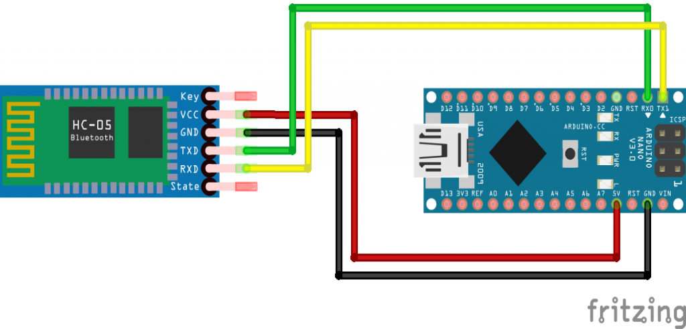

LDR(Light Dependent Resistor or photoresistor or photocell) is a sensor that will conduct current when light falls on it. When there is darkness, this sensor won't conduct and so its resistance would be very high at that time.
Specifications
Bluetooth protocal: Bluetooth Specification v2.0+EDRFrequency: 2.4GHz ISM band
Modulation: GFSK(Gaussian Frequency Shift Keying)
Emission power: ≤4dBm, Class 2
Sensitivity: ≤-84dBm at 0.1% BER
Speed: Asynchronous: 2.1Mbps(Max) / 160 kbps, Synchronous: 1Mbps/1Mbps
Security: Authentication and encryption
Profiles: Bluetooth serial port
Power supply: +3.3VDC 50mA
Working temperature: -20 ~ +75Centigrade
Dimension: 26.9mm x 13mm x 2.2 mm

Pinout configuration
| Enable / Key | This pin is used to toggle between Data Mode (set low) and AT command mode (set high). By default it is in Data mode |
| Vcc | Powers the module. Connect to +5V Supply voltage |
| Ground | Ground pin of module, connect to system ground. |
| TX – Transmitter | Transmits Serial Data. Everything received via Bluetooth will be given out by this pin as serial data. |
| RX – Receiver | Receive Serial Data. Every serial data given to this pin will be broadcasted via Bluetooth |
| State | The state pin is connected to on board LED, it can be used as a feedback to check if Bluetooth is working properly. |
| LED |
Indicates the status of Module Blink once in 2 sec: Module has entered Command Mode Repeated Blinking: Waiting for connection in Data Mode Blink twice in 1 sec: Connection successful in Data Mode |
Button | Used to control the Key/Enable pin to toggle between Data and command Mode |
It can be worked with
Working of HC05 with Arduino Uno

...
...